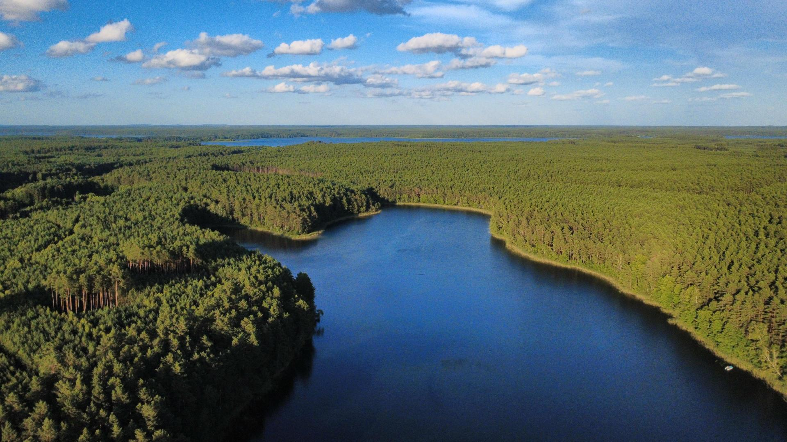

Moim hobby jest latanie dronami. Są to małe, bezzałogowe statki powietrzne dostępne praktycznie dla każdego, ponieważ uzyskanie licencji jest proste. Do większości z nich wystarczy jedynie przejść kurs online i napisać egzamin, który jest w formie quizu, a cena za tańsze modele dobrej jakości zaczyna się na około 800 złotych.
Osobiście posiadam model DJI Mini 4k, który jest w pakiecie Fly More Combo - za dopłatą zamiast 1 baterii dostaje się 3, które są lepszej jakości i hub do ładowania ich, oraz zamienne śmigła, które w przypadku braku osłon śmigieł (zwykle spotykanych przy modelach NEO) mogą być przydatne po jakimś drobnym wypadku.
Dron DJI Mini 4k posiada masę 249g, przez co jedyny wymóg to zarejestrowanie się na portalu drony.gov.pl z powodu na kamerę (drony do 250g bez kamery nie wymagają żadnych uprawnień, a z kamerą wymagają rejestracji z powodu możliwości zbierania danych osobowych). Kamera ta posiada 12 Mega Pixeli (4000x3000) oraz możliwość nagrywanie w 4k/30fps, 2,7k i FullHD/60fps. W trybie sportowym osiąga prędkość poziomą do 16 metrów na sekundę czyli prawie 60 km/h, oraz 5m/s wznoszenia (około 18km/h). Jego maksymalna wysokość to 120 metrów nad ziemią spowodowana ograniczeniami prawnymi.
